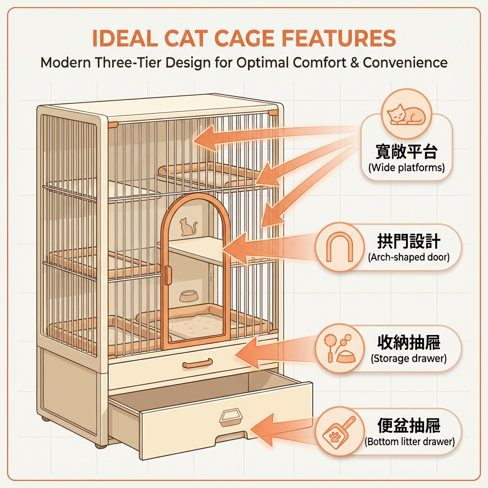
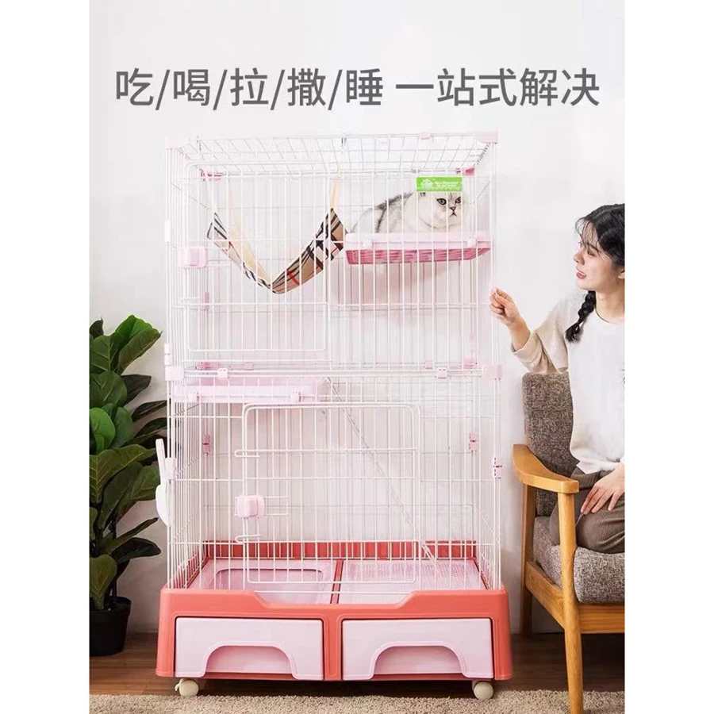

<!DOCTYPE html>
<html lang="zh-TW">

<head>
    <!-- Google Tag Manager -->
    <script>(function (w, d, s, l, i) {
            w[l] = w[l] || []; w[l].push({
                'gtm.start':
                    new Date().getTime(), event: 'gtm.js'
            }); var f = d.getElementsByTagName(s)[0],
                j = d.createElement(s), dl = l != 'dataLayer' ? '&l=' + l : ''; j.async = true; j.src =
                    'https://www.googletagmanager.com/gtm.js?id=' + i + dl; f.parentNode.insertBefore(j, f);
        })(window, document, 'script', 'dataLayer', 'GTM-PQG5SMQQ');</script>
    <!-- End Google Tag Manager -->

    <!-- Google tag (gtag.js) -->
    <script async src="https://www.googletagmanager.com/gtag/js?id=G-69346X9ZKE"></script>
    <script>
        window.dataLayer = window.dataLayer || [];
        function gtag() { dataLayer.push(arguments); }
        gtag('js', new Date());
        gtag('config', 'G-69346X9ZKE');
    </script>

    <meta charset="UTF-8">
    <meta name="viewport" content="width=device-width, initial-scale=1.0">

    <!-- SEO Meta Tags -->
    <title>??025?€?啜€之蝛粹?鞎??貉頃??嚚????菔?鞎雿?????剁??之??/title>
        <meta name="description" content="憭?摰嗅滬?匱鞎????摰閫??憭抒征??蝐鞈?憭折??蛛?撠箏站??鞈芥€?瑽€?瞏€?隞塚??之?萄祕皜祆?西悸?舫璅?銝惜鞎?嚗撣嗅?摨??€嚗?鞎雿?????具€?瘥?銵冽?鞈潸?暺€蝙?冽?憓???2025?€?啗?蝐?虫?甈∠????唳?擗????嗉?嚗?>

    <!-- Canonical URL -->
    <link rel=" canonical" href="https://pandacat.com.tw/blog/large-cat-cage-guide/">

        <!-- Open Graph -->
        <meta property="og:type" content="article">
        <meta property="og:title" content="??025?€?啜€之蝛粹?鞎??貉頃??嚚????菔?鞎雿?????剁??之??>
    <meta property=" og:description" content="憭?摰嗅滬?匱鞎??Ｗ???敺偕撖賊?€?鞈芣?頛摰?扯€?嚗??渲圾?之蝛粹?鞎??貉頃?€撌扼€?憭批撖行葫?刻鞊芾???撘?蝐?銝惜閮剛??撣嗅?摨??€嚗?鞎雿????敹€?>
    <meta property=" og:url" content="https://pandacat.com.tw/blog/large-cat-cage-guide/">
        <meta property="og:image" content="https://pandacat.com.tw/assets/blog/large-cat-cage-cover.jpg">
        <meta property="og:site_name" content="?之??Pandacat">
        <meta property="article:published_time" content="2025-01-15">
        <meta property="article:author" content="?之??>

    <!-- Favicon -->
    <link rel=" icon" type="image/x-icon" href="../../assets/favicon.ico">
        <link rel="apple-touch-icon" href="../../assets/logo.png">

        <!-- Stylesheet -->
        <link rel="stylesheet" href="../../style.css">

        <!-- JSON-LD Article Schema -->
        <script type="application/ld+json">
    {
      "@context": "https://schema.org",
      "@type": "Article",
      "headline": "憭抒征??蝐鞈潭???5???菔?鞎雿??????,
      "datePublished": "2025-01-15",
      "dateModified": "2025-01-15",
      "image": "https://pandacat.com.tw/assets/blog/large-cat-cage-cover.jpg",
      "author": {
        "@type": "Organization",
        "name": "?之??Pandacat"
      },
      "publisher": {
        "@type": "Organization",
        "name": "?之??Pandacat"
      },
      "description": "憭?摰嗅滬?匱鞎??Ｗ???摰閫??憭抒征??蝐鞈?憭折??蛛?撠箏站??鞈芥€?瑽€?瞏€?隞嗚€?
    }
    </script>
</head>

<body>
    <!-- Google Tag Manager (noscript) -->
    <noscript><iframe src="https://www.googletagmanager.com/ns.html?id=GTM-PQG5SMQQ" height="0" width="0"
            style="display:none;visibility:hidden"></iframe></noscript>
    <!-- End Google Tag Manager (noscript) -->

    <!-- ===== Header ===== -->
    <header class="header" id="header">
        <div class="container header__inner">
            <a href="../../index.html" class="header__logo" aria-label="?之?菟???>
                
            </a>

            <nav class="header__nav" aria-label="銝餉?撠">
                <ul class="header__nav-list">
                    <li><a href="../../index.html#values" class="header__nav-link">???艙</a></li>
                    <li><a href="../../index.html#products" class="header__nav-link">???寡</a></li>
                    <li><a href="../../index.html#story" class="header__nav-link">蝷曄黎</a></li>
                    <li><a href="index.html" class="header__nav-link active">Blog</a></li>
                    <li><a href="../../index.html#faq" class="header__nav-link">FAQ</a></li>
                </ul>
            </nav>

            <a href="https://shopee.tw/xuanling67" target="_blank" rel="noopener noreferrer" class="header__cta">
                <svg xmlns="http://www.w3.org/2000/svg" width="16" height="16" viewBox="0 0 24 24" fill="currentColor">
                    <path
                        d="M7 18c-1.1 0-1.99.9-1.99 2S5.9 22 7 22s2-.9 2-2-.9-2-2-2zM1 2v2h2l3.6 7.59-1.35 2.45c-.16.28-.25.61-.25.96 0 1.1.9 2 2 2h12v-2H7.42c-.14 0-.25-.11-.25-.25l.03-.12.9-1.63h7.45c.75 0 1.41-.41 1.75-1.03l3.58-6.49c.08-.14.12-.31.12-.48 0-.55-.45-1-1-1H5.21l-.94-2H1zm16 16c-1.1 0-1.99.9-1.99 2s.89 2 1.99 2 2-.9 2-2-.9-2-2-2z" />
                </svg>
                ???衣鞈?
            </a>
        </div>
    </header>

    <!-- ===== Blog Article ===== -->
    <main class="blog-article">
        <div class="container">
            <!-- Article Meta -->
            <div class="blog-article__meta">
                <a href="index.html" class="blog-article__back">??餈? Blog</a>
                <div class="blog-article__info">
                    <span class="blog-article__category">?典??貉頃</span>
                    <time class="blog-article__date">2025-01-15</time>
                </div>
            </div>

            <!-- Article Content -->
            <article class="blog-content">
                <h1>??025?€?啜€之蝛粹?鞎??貉頃??嚚????菔?鞎雿??????/h1>

                    <section>
                        <p>
                            雿銝銋?箏振鋆∠?鞎撠銝€??strong class="highlight">摰???拙?撖祆???撅祉征??/strong>嚗?
                            ?∟??臬?鞎振摨剝?閬??Ｗ?扎€匱鞎??啣振?€閬?憓€??航??芰???閬?擗?
                            銝€?末??蝐?質?憌潔蜓?湔敹?鞎銋?敺??嚗?
                        </p>
                        <p>
                            雿??Ｖ?鞎??曄甈橘?敺嗾???唬??砍??賣?嚗摨府?獐???交?敹?
                            ?????渡?鈭?strong>?貉頃鞎???5 ???菔?暺?/strong>嚗?
                            ???澈?€振憟嗆硃撖行葫??鞊芾鞎?嚗?雿?頦拚??甈∪停鞎瑕?嚗?
                        </p>
                    </section>

                    <section>
                        <h2>?箔?暻潮?閬之蝛粹?鞎?嚗??蝙?冽?憓?甈∠???/h2>

                            <p>
                                敺?鈭箸????振鋆∪歇蝬?撖祆?鈭??箔?暻潮?閬眺鞎?嚗€撖佗?<strong
                                    class="highlight">鞎?銝?鞎?芰嚗€??摰靽?</strong>??
                                撠文?冽?鈭畾?瘜?嚗?蝐??霈??芣???冽???霈ˉ銝餅摰???
                            </p>

                            <h3>1. 憭?摰嗅滬??日??Ｙ???/h3>
                                <p>
                                    憒?雿振擗??拚隞乩???嚗?摰???芣?憭?閬撌梁??啁嚗?strong
                                    class="highlight">?啗??摰嗆?嚗?鞎?賣??箇?餅????亥???/strong>嚗?
                                    ????蝐停?舀?憟賜??撌亙???啗?鞎???蝐?鈭??瘞?嚗???賡????Ｘ?箔?鈭?嚗隞亙之撟?雿??園◢?芥€?
                                </p>
                                <p>
                                    ?€振憟嗆硃?????????祇??銝€?餉?摰銝??歹??拚鞎?閬撠勗?瘞?€蕭?研€?
                                    敺??€鞎??鈭之蝝?梧?瘥予霈?????摮?瘞??????孵?憌荔??Ｘ撱箇?靽∩遙?€?
                                    ?曉??餃歇蝬隞乩?韏瑞閬箔?嚗?strong class="highlight">鞎???撟思?憭批?</strong>??
                                </p>
                                <p>
                                    ?貉頃??嚗?鞎振摨剖遣霅圈??strong>銝惜隞乩??之??蝐?/strong>嚗?鞎?雲憭??蝛粹?瘣餃?嚗?
                                    銝???瑟???蝐€??啣?餈急??∟?????蝣箔?蝐??摨€歲?啁?閮剜嚗?鞎?臭誑頝喃?頝喃?瘨€移?€?
                                </p>

                                <h3>2. 撟潸??拇??啁憓?摰?∪?</h3>
                                <p>
                                    ?葆?振?匱鞎??啣????拿??<strong>憒??湔?暸?嚗?賣?頨脣瘝摨???摨?銝?箔?</strong>嚗?
                                    ??航?憭芰?撘菔€?撠踹倏?€???蝐隞交?靘??€??函?撠予?啜€?霈匱鞎???征??Ｘ?拇??啣振??喋€除?喳?鈭粹??閫詻€?
                                </p>
                                <p>
                                    撱箄降?刻?蝐ㄐ?曄蔭???憓€?瘀?隞亙??雲???拙?瘞湛?霈匱鞎??啣?敹€?strong
                                    class="highlight">蝑撟潸???銝餃??函??抒?€??熔??/strong>嚗?
                                    撠勗隞仿€郊?瘣餃?蝭?嚗??蝝Ｘ憭抒?蝛粹??€€?蝔€虜?€閬?1-2 ?梧??銝??亥??曉靘?隞亙??撟潸???
                                </p>
                                <p>
                                    甇文?嚗匱鞎暑??撘瑯€末憟??箇?嚗振鋆∪?憭?孵??€?隤芷?舀??典?迎?靘??餌???瘥??押€?啁葦??嚗€?
                                    <strong>?券ˉ銝餌瘜憭拙€??嚗?蝐隞亦Ⅱ靽匱鞎?摰</strong>嚗???憭€?
                                </p>

                                <div class="blog-image">
                                    
                        <p class=" blog-image-caption">???鞎??身閮?暺?憭惜撟喳 + ?梢?閮剛? + 靘輻??賢?</p>
                                </div>

                                <h3>3. 鞎???????蝛粹?</h3>
                                <p>
                                    ?嗉??芰???????賊?虜?遣霅?strong>???嗆暑?€????胯€?/strong>???振鋆⊿??隞??迎?
                                    ?湧?閬??ａ?漱????靘?鞎??€輕?????單????€???蝐停???€雿喟???蝛粹???
                                </p>
                                <p>
                                    ?刻?蝐?臭誑?批鞎?暑????蝣箔????歲銝歲銝??游?????撉冽??∪?????<strong
                                        class="highlight">鞎?銋靘輸ˉ銝餉?撖??芰??脤???瘜?瘜?/strong>嚗?
                                        憒??撣詨隞亦??喟?曆蒂撠梢??
                                </p>
                                <p>
                                    ?支??曄??嚗?敺霅瑚?敺?閬?蝐€?憒??芰?蝝桀??€閬?擗?7-10 憭抬??挾??憒?霈??芾?望暑??
                                    ?航???箄??????漲??撠雿萇?€?strong>?刻?蝐???臭誑憭批???憸券</strong>嚗??Ｗ儔???湧??押€?
                                </p>

                                <h3>4. 摰嗡葉?赤摰Ｘ??????</h3>
                                <p>
                                    ??鞎?€扳?頛拿蝢???嚗撠??犖??撘萄頨脰絲靘€??喳??啣倏憭梁????振鋆∪虜?扛??閮芥€??舫?閬?皜?鈭箏??嚗?
                                    <strong>鞎??臭誑?鞎?€??典憯€?/strong>嚗??€???征?摰?蝑?閮芸恥?ａ???
                                </p>
                                <p>
                                    甇文?嚗?鈭赤摰Ｗ?賢?鞎??????臭??迭撖萇嚗€???鞎?急??€脩??改??Ｚ靽風鞎銝◤撽?嚗?
                                    銋霈赤摰Ｘ??唳?芸??敺蝐?曄蔭鞎?迭?秤摮??園?嚗?strong
                                    class="highlight">霈?閬箏???蝐€??舀蝵堆??摰??蝒?/strong>??
                                </p>

                                <h3>5. ??瘨????冽?雿?</h3>
                                <p>
                                    ?嗡??€閬之??蝙?冽?瘥?皜??唳嚗??航??渡??方??嚗?strong>???飛?抵釭撠??芯?隤芷?航??</strong>??
                                    ?憭折??瞏??璁€秘?拙??€?雿鈭??刻絲閬?撱箄降?冽???撠??芣???Ｗ鞎??改?蝑?Ｗ??其嗾?乓€除?單?餃???箔???
                                </p>
                                <p>
                                    ?血?嚗???閬摰嗆??鋆耦嚗?蝐??臬?撖衣?極?瑯€??芸??啣?霈??虜??嚗?
                                    ?賢極????喋€?憛萸€??犖?脣?賣?霈????唳扔摨衣?柴€?strong>???芸?蝵桀鞎??找蒂蝘餃摰????/strong>嚗?
                                    ?臭誑憭批?皜?憯?嚗??踹?鞎?冽毽鈭葉韏啣仃???瑯€?
                                </p>
                    </section>

                    <section>
                        <h2>?貉頃憭抒征??蝐? 5 ???菔?暺?/h2>

                            <p>
                                鈭圾鞎????嚗銝?撠望??莎?<strong class="highlight">?啣?閰脫€獐?銝€???鞎?嚗?/strong>
                                    隞乩??渡?鈭?5 ?????鞈潸?暺??芾??????嚗停?賣?啗??芣??ˉ銝颱?皛踵???蝢?蝐?
                            </p>

                            <h3>1. 撠箏站閬?憭改??喳??航??芾澈?瑞? 1.5 ??/h3>
                                <p>
                                    鞎??偕撖豢擐???嚗?strong
                                    class="highlight">憭芸??征??霈??芣??啣?餈怒€?殷??敶梢?亙熒</strong>??
                                    銝€?砍遣霅啗?蝐??瑕祝擃撠???strong>鞎頨恍嚗?曌餃??啣偏撌湔?剁???1.5
                                    ?誑銝?/strong>嚗€見鞎??頞喳??征??憌胯€閬箝€?撱?嚗蒂銝隞亥?梯?頨怒€撓撅澈擃€?
                                </p>
                                <p>
                                    撠??靘牧嚗遣霅圈??strong>撖砍漲?喳? 60cm??摨西撠?120cm ??撅文?鞎?</strong>??
                                    ?箔?暻潸?撘瑁矽??摨艾€??鞎?臬??渡征???末???€?甇∠擃€歲頨€銝?撅斗活?宏?€?
                                    銝€??擃?鞎??臭誑皛輯雲鞎?予?改?霈??蝐銋瘣餃?蝑爸嚗????粹??????敺????亥???
                                </p>
                                <p>
                                    甇文?嚗?敺?strong>???曄蔭鞎???蝛粹?</strong>??憭犖鞎瑚?鞎?敺??潛嚗?亥???敺擗征??敺???
                                    鞎???頨恍?圈?遣霅啗頃鞎瑕??葫?振鋆∟????偕撖賂?蝣箔?鞎?摨惜?曉鞎???嚗??芷??雲憭征?粥?€?
                                    ??€瘜<strong class="highlight">鞎????撅日蝛? 1/3
                                        ??1/2</strong>嚗擗征?隞交蝵桅?蝣€偌蝣??∪???
                                </p>

                                <h3>2. ?釭閬??剁??豢??⊥??€??鞈?/h3>
                                    <p>
                                        撣銝?鞎??釭銝餉??銝車嚗?strong>?菔ˊ???ˊ?鋆?/strong>??蝔格?鞈芷?蝻粹?嚗??閬€鞎???批?憌潔蜓?蝙?券?瘙€?
                                    </p>
                                    <p>
                                        <strong
                                            class="highlight">?菔ˊ鞎?</strong>?舀?撣貉?????芷??舐?瑽??箝€€摨阡?嚗雿踹之???芾歲頨?銝?霈耦??
                                        雿撩暺?其?鈭?賣??嚗陘?嗆摨?亥孛鞎????唳?鞈潭?撱箄降?豢?<strong>??賢?撅斤??菔ˊ鞎?</strong>嚗?
                                        ?摰??行靽?銋曄嚗隞亙辣?瑚蝙?典ˊ?賬€?
                                    </p>
                                    <p>
                                        <strong
                                            class="highlight">憛?鋆質?蝐?/strong>?暺頛噶?捆??瞏???銝????潮€虜瘥鋆質?蝐擃?
                                            雿??ˉ銝餃?瘞??憭扼€??舫?閬?撣貊宏??蝐?憛?鋆賢???游末??€銝€閬釣???荔?
                                            <strong>憛??釭撠??祆镼輻?鞎靘牧?航銝??</strong>嚗????芣??蝧嚗遣霅圈?????憛毽?狡??
                                    </p>
                                    <p>
                                        <strong
                                            class="highlight">?刻ˊ鞎?</strong>憭??€蝢?嚗隞亥??亙振撅?瞏ｇ?雿撩暺?寞?眼?捆???喉?
                                        ??皜?靽?瘥?暻餌????蝞?頞喋€?瘜券?摰嗡葉蝢?嚗鋆質?蝐銝???
                                        雿??誑撖衣?抒銝鳴??菔ˊ???ˊ??拙???
                                    </p>
                                    <p class="tip">
                                        <strong class="highlight">?
                                            撠?撌改?</strong>?∟??詨蝔格?鞈迎??質?蝣箄?<strong>憛??⊥?</strong>嚗?
                                        鞎?航???祉?摮?憒?憛??急???撅祆??拿?飛?抵釭嚗?閫詨?賢??港葉瘥€頃鞎瑟?閮?閰Ｗ?摨振?臬??摰瑼ａ???
                                    </p>

                                    <h3>3. 蝯?閬帘?綽??賣??鞎???頝唾?</h3>
                                    <p>
                                        鞎?歲頨?撽犖嚗??餅?鞎?擃??虜??4-7kg 銋?嚗歲頨??????舫?擃???€?
                                        <strong
                                            class="highlight">憒?鞎?蝯?銝?蝛拙嚗歲?啣?賣??怨?鋆???游€?摮蕃??/strong>嚗?鞎靘牧?虜?梢??
                                    </p>
                                    <p>
                                        ?貉頃???孵瑼Ｘ隞乩?撟曉€?對?<strong>頝喳?摰撘?/strong>嚗?箇結????⊥托嚗蝯脫?頛????
                                            <strong>蝐????/strong>嚗?血捆??敶Ｘ?擛嚗???strong>摨漣?帘摰€?/strong>嚗??文?撖砍?嚗?銝?頛??暹?嚗???
                                    </p>
                                    <p>
                                        ?€振憟嗆硃?舫 7.5kg ??鞎?頝唾絲靘???敺?鈭箝€????函?鞎??臭噶摰?蝯?甈橘?蝯???頝喃??鳴?
                                        頝喳蝡甇芣??蝯脤???????蝺?鈭????狡撘€?strong
                                        class="highlight">?銝??箔???豢??釭銝蔔??蝐?/strong>嚗?
                                        ?砌?鞎?嚗?亥祥??鞎?鞎游?憭€?
                                    </p>

                                    <div class="blog-image">
                                        
                                        <p class="blog-image-caption">???之?菔悸?舫璅?鞎?撖阡?雿輻??嚗?憭抒征??+ 銝惜閮剛? +
                                            蝛拙蝯?</p>
                                    </div>

                                    <h3>4. 皜?閬靘選?摨?賢? + ?舀??貉歲?啗身閮?/h3>
                                        <p>
                                            鞎??€閬???瞏??靽?銵????喳?蝝啗?皛???strong
                                            class="highlight">?貉頃??摰????瞏?漲??/strong>嚗?
                                            ?血?瘥活???賜??西??銋€?銋停????敶梢鞎?亙熒??
                                        </p>
                                        <p>
                                            ?€?刻?身閮<strong>摨?賢?撘???/strong>嚗隞亦?交?箔?皜?嚗??€閬??豢??蝐€?
                                                ??€憟賡?瘞湔?鞈迎?靘? ABS 憛?嚗??見?喃蝙鞎???撠踵?憌?蕃嚗??臭誑頛??行?偌瘣€?
                                        </p>
                                        <p>
                                            ?血?嚗?strong
                                            class="highlight">頝喳??摨?憟賣?舀??貊?</strong>嚗€見?摰??蹂?靘?瘣€?
                                            鞎??擃柴€撅€瘞湧?移????唳嚗??瘜??賂??芾?冽撣?哨?皜???????
                                        </p>
                                        <p>
                                            ?€振?曉?函?鞎???遝頛芾身閮?蝘餃?頞靘選?撟喳虜?芾??典瘚游恕??嚗停?臭誑?湔?冽偌蝞⊥?瘣??歹?
                                            瘥誑??摰?鞎?頛?憭芸?鈭€?strong
                                            class="highlight">撱箄降?豢??遝頛芥€?皛曇憚?舫?摰?甈曉?</strong>嚗宏?靘踹?銝€?摮??€??梢??
                                        </p>

                                        <h3>5. ?辣閬??剁????歲?啜€??銝€?膨??/h3>
                                            <p>
                                                銝€?末??蝐??芣銝€?€拳摮€??銝€??strong>???芰?餈瑚?鞊芸???/strong>??
                                                ?箸?辣?嚗?strong
                                                class="highlight">??嚗?鞎隡嚗€歲?堆?皛輯雲?€?砍予?改????嚗ㄗ?芣??????瑟??歹??€?璉?</strong>蝑€?
                                            </p>
                                            <p>
                                                ???孵??嚗??芸?甇∠?券?????銝?蝭€?征???霈??芣??啣??具€?
                                                ?貉頃??蝣箄?<strong>?????</strong>嚗??憭批?鞎???嚗?摰??詨??狡嚗??摨鋆??渲??芸??瑯€?
                                            </p>
                                            <p>
                                                甇文?嚗?鈭???蝐??葆<strong
                                                    class="highlight">?舐宏??鞎???/strong>??strong>?梯?撘??€閮剛?</strong>嚗?
                                                ?臭誑?????摨?賢?鋆∴??Ｙ?閫€?祕?具€???蝞?閮梧??虜?刻?豢???閮剛?嚗?
                                                ?臭誑????鞎??喲?嚗?霈??芣??渡?撖?憒?蝛粹???
                                            </p>
                    </section>

                    <section>
                        <h2>?之?萄祕皜祆?佗?鞊芾???撘之??蝐?/h2>

                            <div class="callout-box">
                                <div class="callout-icon">??</div>
                                <div class="callout-content">
                                    <h4>?箔?暻潭???€狡鞎?嚗?/h4>
                                        <p>
                                            蝬?憭瘥??祕皜穿??€?敺??<strong
                                                class="highlight">??憭批?悸?舫璅?憭批?鞎?</strong>??
                                            ?狡鞎?摰?蝚血??€????唾?蝐€??€???<strong>頞之蝛粹???撅方身閮€撣嗅?摨?撱?????遝頛?/strong>嚗?
                                                憟嗆硃撌脩?雿??僑嚗?撣豢遛??
                                        </p>
                                </div>
                            </div>

                            <h3>?狡鞎???5 憭找漁暺?/h3>

                                <ol class="highlight-list">
                                    <li><strong class="highlight">頞之銝惜蝛粹?嚗?/strong>撠箏站撖祆?嚗雿踵憭批?鞎?憭?雿輻銋???</li>
                                    <li><strong class="highlight">鞊芾?辣朣嚗?/strong>?芸葆???歲?啜€??嚗??€閬憭頃鞎?/li>
                                    <li><strong class="highlight">?梯?撘??€閮剛?嚗?/strong>摨?賢??舀蝵株???嚗?閫€?祕??/li>
                                    <li><strong class="highlight">?菔ˊ蝯?蝛拙嚗?/strong>???萇恣閮剛?嚗??撘瘀?銝€??芾歲頨?/li>
                                    <li><strong class="highlight">?砍?皛曇憚閮剛?嚗?/strong>蝘餃?頞靘選?皜??隞亥?擛?唳偌皞?</li>
                                </ol>

                                <p>
                                    ?€霈??遛????strong
                                    class="highlight">摨?撅身閮?/strong>?椰?撅隞交鞎????喲??賢??臭誑?嗥?鞎???瞏極?瑞??典?嚗?
                                    ?湧??絲靘??湧?嚗€??賢??舫瘞湔?鞈迎??喃蝙鞎???撠蹂?銝€?擃?摮擃?皜?頞?擛€?
                                </p>
                                <p>
                                    ????鞈芯?敺?嚗??strong>?除蝬脣?閮剛?</strong>嚗?憭拐???梧??砍予?臭誑??瘥臬?靽???
                                    憟嗆硃瘥予?€??瘣餃?撠望頨箏?惜??銝憭芷嚗??遛頞喟?璅????憭芸??嚗?
                                </p>

                                <p class="tip">
                                    <strong class="highlight">?? ???芣?嚗鞎典???</strong>
                                    憒?雿??典??暸??釭?之蝛粹?鞎?嚗?血?€??衣鞈???嚗?
                                    <a href="https://shopee.tw/xuanling67" target="_blank"
                                        rel="noopener noreferrer">??憭批?悸?舫璅?憭批?鞎?</a>??
                                    憭?舫嚗??脯€??脯€??莎?嚗翰靘鼠銝餃??€?撅祈悸摰嚗?
                                </p>
                    </section>

                    <section>
                        <h2>銝?鞎?憿?瘥?銵?/h2>

                            <p>
                                憒?雿??函鞊怨府?詨蝔桅???鞎?嚗誑銝”?潭??撣銝虜閬?蝐??芰撩暺??臭誑?寞??芸楛??瘙??豢?嚗?
                            </p>

                            <table class="comparison-table">
                                <thead>
                                    <tr>
                                        <th>鞎?憿?</th>
                                        <th>?芷?</th>
                                        <th>蝻粹?</th>
                                        <th>?拍撠情</th>
                                        <th>?刻摨?/th>
                                    </tr>
                                </thead>
                                <tbody>
                                    <tr>
                                        <td>?桀惜?箸甈?/td>
                                        <td>?寞靘踹???蝛??末?嗥?</td>
                                        <td>蝛粹??孵??瘜遛頞唾??芣??祇?瘙?/td>
                                        <td>?剜?雿輻???箸?撣?/td>
                                        <td>??????/td>
                                    </tr>
                                    <tr>
                                        <td>?惜璅?甈?/td>
                                        <td>?寞?拐葉??砍??賡???/td>
                                        <td>蝛粹?蝔?銝雲??蝙?函??/td>
                                        <td>?株??????/td>
                                        <td>??????/td>
                                    </tr>
                                    <tr>
                                        <td>銝惜鞊芾甈?/td>
                                        <td>蝛粹?撖祆???隞園??具€??芾??拙漲擃?/td>
                                        <td>?寞頛????函征?之</td>
                                        <td>憭?摰嗅滬??蝙??/td>
                                        <td>??????/td>
                                    </tr>
                                    <tr>
                                        <td>撖行?亙?甈?/td>
                                        <td>憭?蝢????亙振撅?瞏?/td>
                                        <td>?寞?眼??瞏?擗獄??/td>
                                        <td>瘜券?蝢???蝞?頞唾€?/td>
                                        <td>??????/td>
                                    </tr>
                                </tbody>
                            </table>

                            <p>
                                ?寞??€?蝬?嚗?strong class="highlight">銝惜鞊芾甈暹 CP ?潭?擃??豢?</strong>??
                                ?????頛?嚗??臭誑?典?憭僑嚗€?鞎???拙漲?＊??嚗?
                                銝??蝛粹?憭芸???格????嚗?????????
                            </p>
                    </section>

                    <section>
                        <h2>蝮賜?嚗策鞎銝€???刻??拍?撠惇蝛粹?</h2>

                        <p>
                            ?貉頃憭抒征??蝐????<strong class="highlight">?芾???偕撖詨?憭扼€?鞈芸??具€?瑽帘?箝€?瞏靘踴€?隞園??具€€?5
                                ??暺?/strong>嚗?
                                撠梯?曉?拙??芸振鞎??蝢?蝐€?雿?鞎?銝?鞎?€蝐€??靽風鞎?€??典憯€€?
                        </p>
                        <p>
                            ?∟??臬?鞎??Ｕ€匱鞎?€?敺?擗???剜?憭嚗??末??蝐?質?憌潔蜓?游?敹€??芣???
                            <strong>??銝€???釭??蝐?撠望??鞎?摨瑕?撟貊?</strong>嚗?
                        </p>

                        <p class="tip">
                            <strong class="highlight">? 蝡銵?嚗?/strong>隞予撠梁雿振鞎?銝€???拍?鞎??改?
                                ?遙雿鞈潛???雿輻敹?嚗迭餈?€?
                                <a href="https://www.instagram.com/pandacat" target="_blank">Instagram</a>
                                蝘?鈭斗?嚗???璅??澈?游?撖衣蝬?嚗?
                        </p>
                    </section>

                    <section>
                        <h2>撱嗡撓?梯?</h2>

                        <h3>?刻??</h3>
                        <ul>
                            <li><a href="choose-cat-litter.html">?唳??貉????湔?伐?7??暺?雿??詨??拍?鞎?</a></li>
                            <li><a href="multi-cat-introduction.html">憭?摰嗅滬?啗?隞晶??嚚?鞎?像?貉???5 ?郊撽?/a></li>
                            <li><a href="kitten-care-guide.html">撟潸??扯風摰??嚚??鞎€?霈€</a></li>
                        </ul>

                        <h3>憭?€?皞?/h3>
                            <ul>
                                <li><a href="https://tw.my-best.com/56651" target="_blank" rel="noopener noreferrer">
                                        ?賊??ˊ嚚?1 憭扯?蝐?行?銵? - mybest嚗??券€??嚗?
                                    </a></li>
                            </ul>
                    </section>
            </article>

            <!-- Article Tags -->
            <div class="blog-article__tags">
                <span class="blog-article__tag">鞎?</span>
                <span class="blog-article__tag">憭?摰嗅滬</span>
                <span class="blog-article__tag">撟潸?</span>
            </div>

            <!-- Back to List -->
            <div class="blog-article__footer">
                <a href="index.html" class="btn btn--secondary">??餈? Blog ?”</a>
            </div>
        </div>
    </main>

    <!-- ===== Footer ===== -->
    <footer class="footer" id="footer">
        <div class="container">
            <div class="footer__main">
                <div class="footer__brand">
                    <a href="../../index.html" class="footer__logo" aria-label="?之?菟???>
                        
                    </a>
                    <div class="footer__brand-text">
                        <span class="footer__brand-name">?之??Pandacat</span>
                        <p class="footer__tagline">瘥酋???蜓鈭箸敹?/p>
                    </div>
                </div>

                <div class="footer__social">
                    <a href="https://www.instagram.com/pandacat" target="_blank" rel="noopener noreferrer"
                        class="footer__social-link" aria-label="Instagram">
                        <svg xmlns="http://www.w3.org/2000/svg" viewBox="0 0 24 24">
                            <path
                                d="M12 2.163c3.204 0 3.584.012 4.85.07 3.252.148 4.771 1.691 4.919 4.919.058 1.265.069 1.645.069 4.849 0 3.205-.012 3.584-.069 4.849-.149 3.225-1.664 4.771-4.919 4.919-1.266.058-1.644.07-4.85.07-3.204 0-3.584-.012-4.849-.07-3.26-.149-4.771-1.699-4.919-4.92-.058-1.265-.07-1.644-.07-4.849 0-3.204.013-3.583.07-4.849.149-3.227 1.664-4.771 4.919-4.919 1.266-.057 1.645-.069 4.849-.069zm0-2.163c-3.259 0-3.667.014-4.947.072-4.358.2-6.78 2.618-6.98 6.98-.059 1.281-.073 1.689-.073 4.948 0 3.259.014 3.668.072 4.948.2 4.358 2.618 6.78 6.98 6.98 1.281.058 1.689.072 4.948.072 3.259 0 3.668-.014 4.948-.072 4.354-.2 6.782-2.618 6.979-6.98.059-1.28.073-1.689.073-4.948 0-3.259-.014-3.667-.072-4.947-.196-4.354-2.617-6.78-6.979-6.98-1.281-.059-1.69-.073-4.949-.073zm0 5.838c-3.403 0-6.162 2.759-6.162 6.162s2.759 6.163 6.162 6.163 6.162-2.759 6.162-6.163c0-3.403-2.759-6.162-6.162-6.162zm0 10.162c-2.209 0-4-1.79-4-4 0-2.209 1.791-4 4-4s4 1.791 4 4c0 2.21-1.791 4-4 4zm6.406-11.845c-.796 0-1.441.645-1.441 1.44s.645 1.44 1.441 1.44c.795 0 1.439-.645 1.439-1.44s-.644-1.44-1.439-1.44z" />
                        </svg>
                    </a>
                    <a href="https://www.threads.net/@naiyo.meow_0425" target="_blank" rel="noopener noreferrer"
                        class="footer__social-link" aria-label="Threads">
                        <svg xmlns="http://www.w3.org/2000/svg" viewBox="0 0 24 24">
                            <path
                                d="M12.186 24h-.007c-3.581-.024-6.334-1.205-8.184-3.509C2.35 18.44 1.5 15.586 1.472 12.01v-.017c.03-3.579.879-6.43 2.525-8.482C5.845 1.205 8.6.024 12.18 0h.014c2.746.02 5.043.725 6.826 2.098 1.677 1.29 2.858 3.13 3.509 5.467l-2.04.569c-1.104-3.96-3.898-5.984-8.304-6.015-2.91.022-5.11.936-6.54 2.717C4.307 6.504 3.616 8.914 3.59 12c.025 3.086.718 5.496 2.057 7.164 1.432 1.781 3.632 2.695 6.54 2.717 2.623-.02 4.358-.631 5.8-2.045 1.647-1.613 1.618-3.593 1.09-4.798-.31-.71-.873-1.3-1.634-1.75-.192 1.352-.622 2.446-1.284 3.272-.886 1.102-2.14 1.704-3.73 1.79-1.202.065-2.361-.218-3.259-.801-1.063-.689-1.685-1.74-1.752-2.96-.065-1.182.408-2.256 1.332-3.023.88-.73 2.132-1.13 3.628-1.154 1.12-.018 2.14.124 3.063.426-.075-1.006-.32-1.78-.737-2.32-.526-.681-1.376-1.03-2.526-1.038h-.028c-.9.006-1.64.249-2.2.72l-1.322-1.57c.86-.722 2.024-1.12 3.476-1.15h.044c1.749.026 3.12.597 4.076 1.696.897 1.033 1.376 2.463 1.424 4.253.478.152.926.34 1.343.564 1.105.594 1.967 1.472 2.494 2.54.749 1.516.834 4.063-1.2 6.052-1.79 1.752-4.017 2.544-7.202 2.565zm-1.15-6.94c-.01 0-.02 0-.03 0-1.397.075-2.108.745-2.073 1.378.018.32.2.613.512.826.358.245.867.374 1.433.341 1.09-.058 1.9-.46 2.41-1.193.378-.544.596-1.24.652-2.073-.63-.157-1.322-.236-2.073-.229-.297.005-.575.02-.831.05z" />
                        </svg>
                    </a>
                    <a href="https://shopee.tw/xuanling67" target="_blank" rel="noopener noreferrer"
                        class="footer__social-link" aria-label="Shopee">
                        <svg xmlns="http://www.w3.org/2000/svg" viewBox="0 0 24 24">
                            <path
                                d="M7 18c-1.1 0-1.99.9-1.99 2S5.9 22 7 22s2-.9 2-2-.9-2-2-2zM1 2v2h2l3.6 7.59-1.35 2.45c-.16.28-.25.61-.25.96 0 1.1.9 2 2 2h12v-2H7.42c-.14 0-.25-.11-.25-.25l.03-.12.9-1.63h7.45c.75 0 1.41-.41 1.75-1.03l3.58-6.49c.08-.14.12-.31.12-.48 0-.55-.45-1-1-1H5.21l-.94-2H1zm16 16c-1.1 0-1.99.9-1.99 2s.89 2 1.99 2 2-.9 2-2-.9-2-2-2z" />
                        </svg>
                    </a>
                </div>
            </div>

            <nav class="footer__nav">
                <a href="../../index.html#values" class="footer__nav-link">???艙</a>
                <span class="footer__nav-divider">??/span>
                    <a href="../../index.html#products" class="footer__nav-link">???寡</a>
                    <span class="footer__nav-divider">??/span>
                        <a href="../../index.html#story" class="footer__nav-link">??之??/a>
                            <span class="footer__nav-divider">??/span>
                                <a href="index.html" class="footer__nav-link">Blog</a>
                                <span class="footer__nav-divider">??/span>
                                    <a href="../../index.html#faq" class="footer__nav-link">撣貉???</a>
            </nav>

            <div class="footer__bottom">
                <p class="footer__copyright">穢 2024 ?之??Pandacat. All rights reserved.</p>
                <a href="mailto:service@pandacat.com.tw" class="footer__email">service@pandacat.com.tw</a>
            </div>
        </div>
    </footer>
</body>

</html>